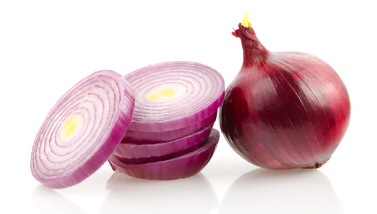

Onion
Onions are vegetables. They are plants in the genus Allium. When people talk about onions, they usually mean garden onions. Most species of onions have bulbs that people can eat. They have a strong flavour and a very distinctive smell. Onions have been grown for a very long time. They were probably first grown in Ancient Egypt, together with leek and garlic, but maybe earlier. Now, most of the world's cultures eat onions. Onions not only provide flavour, they also provide important nutrients and health-promoting phytochemical. Plenty of onion health research provides strong evidence of its nutritional value.

Onion